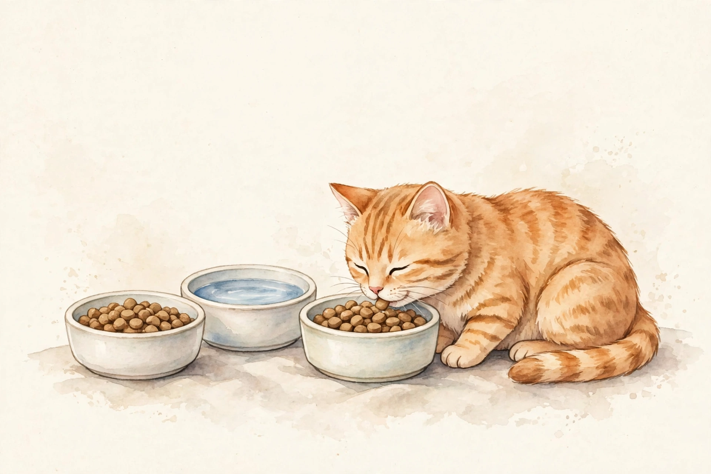

猫の食事の基本

毎日の食事は、猫の暮らしの土台です。この記事は一般的な飼育・ケアの情報で、病気の診断や治療のためのものではありません。食欲や体重に気になる変化があるときは、動物病院に相談してください。
主食は「総合栄養食」を基本に
フードには「総合栄養食」と「一般食（副食）」の表示があります。総合栄養食は、そのフードと水だけで猫に必要な栄養がとれるように作られたもので、主食はこの表示のあるものから選ぶのが基本です。一般食は、嗜好性を高めた副食の位置づけなので、それだけを主食にせず、総合栄養食と組み合わせて使います。
ドライとウェットの特徴
- ドライフード：保存がしやすく、置き餌がしやすいのが特徴です。開封後は湿気ないよう密封して保管します
- ウェットフード：水分を多く含むため、食事と一緒に水分をとりやすくなります。香りが強く、食いつきが良いことも多い一方、開封後は冷蔵して早めに使い切ります
まずこれ（PR）

使い分けの例
基本はドライフードで、週に数回ウェットフードを足す、という組み合わせが一般的です。水をあまり飲まない猫には、ウェットフードの回数を増やして水分を補う考え方もあります。どちらか一方に決めなければならないものではないので、猫の好みと暮らし方に合わせて調整してください。
量の考え方
量の目安は、パッケージに書かれた給与量表示（体重・年齢別）です。あわせて、体型の変化も見ていきます。肋骨にやさしく触れて、薄く脂肪がのった状態で骨の感触が分かるくらいが目安とされます。量の調整は少しずつ行い、急な増減は避けてください。
新しいフードへの切り替え方
フードを急に全て変えると、食べなかったり、お腹の調子が変わったりすることがあります。今のフードに新しいフードを少しずつ混ぜて、1週間ほどかけて割合を増やしていく方法が無難です。
水の工夫
- 新鮮な水をいつでも飲めるようにし、器は毎日洗って水を取り替える
- 水飲み場を複数箇所に置くと、飲む機会が増えます
- 食事の器と水の器を少し離すとよく飲む猫もいます
注意
- 人の食べ物は与えないでください。ネギ類やチョコレートなど、猫にとって有害な食べ物があります。味付けされた人の食事も猫には向きません。
- 食欲がない、急に痩せてきた、水を飲む量が急に増えたといった変化が続くときは、早めに動物病院へ相談してください。
- 精油（アロマオイル）は猫に使わないでください。食事の器や水に香りのついたものを混ぜることもしないでください。
おすすめ用品（PR）
この記事のテーマに合わせて選んだ用品です。詳しくは販売ページでご確認ください。

※本記事の商品リンクは楽天アフィリエイトによる広告リンクです。価格や在庫は販売ページでご確認ください。
猫のLINEスタンプ
このサイトの運営者（222キャラ工房）が作っている、猫のLINEスタンプです。毎日の連絡にどうぞ。